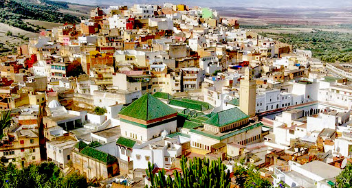
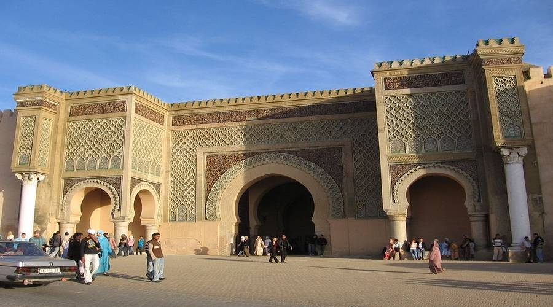

La place Lahdim (en arabe : ساحة الهديم, en français : place de la démolition) est la plus célèbre place publique de Meknès. Elle a été aménagée entre 1672 et 1674 par le sultan Moulay Ismaïl. C'est un espace de 200 m sur 90 m entre le tissu ancien de la médina et la nouvelle cité impériale construite par le sultan.

Bab El Khemis (ou Bab El Khamis) est une porte monumentale située à l'ouest de la médina de Meknès. Elle a été construite au xviie siècle, sous le règne du sultan Moulay Ismaïl.Cette porte fut autrefois l'entrée principale de la cité du jardin de l'Ambre (Madinat Ar-Riad Al Anbari). La géométrie et les décorations de Bab Al-khemis sont similaires à celles de Bab El Bardayin. On y retrouve également une inscription composée de trois versets de poésie, ainsi que le mot «construit» qui indique la date d'achèvement de la construction de la porte : 1098 hégire qui correspond à l'année 16861.
La mosquée Bab Berdaine (arabe : مسجد باب البرادعين) est une mosquée qui se trouve dans l'ancienne médina de Meknès au Maroc, construite par l'une des épouses du roi alaouite Moulay Ismail au xviiie siècle1, Khnata bent Bakkar (arabe : خناثة بنت بكار المعافري), une femme que des historiens qualifient de la première ministre des affaires étrangères au Maroc2. L'ancienne médina de Meknès est classée au patrimoine mondial de l'UNESCO3.

Le palais Dar Jamaï fut édifié en 1882 dans la ville de Meknès au Maroc par Mohamed ben Larbi Jamaï, grand Vizir du Sultan Moulay Hassan 1er (1873-1894)1.Ce monument est devenu l'hôpital militaire Louis en 1912, puis il a été transformé en musée à partir de 1920 sous l'appellation de "Musée des Arts Indigènes", et ensuite rebaptisé "Musée Dar Jamaï".Le palais Dar Jamaï fait partie du patrimoine protégé de Meknès depuis 1920.
La construction de la Medersa Bou Inania commença avec le début du règne de Abu al-Hasan en 1331 (dynastie mérinides), mais elle ne fut terminée que 20 ans après, en 1351, sous le règne de Abu Inan Faris dont elle porte le nom.La medersa Bou Inania fait partie du patrimoine protégé de Meknès depuis 1923.
La porte dite Bab el-Mansour a été achevée en 17322 par Moulay Abdallah, fils du sultan Moulay Ismaïl2. Elle marque l'entrée principale du palais impérial construit pour Moulay Ismaïl. La porte a été conçue par un chrétien converti à l'islam, d'où son nom : La porte de Mansour, le renégat2. Les colonnes de marbre qui ornent les bastions latéraux en saillie proviennent des ruines de Volubilis.La porte monumentale de Bab-el-Mansour en 1931Bab Mansour fait partie du patrimoine protégé de Meknès depuis 1914.